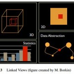
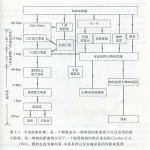
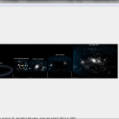
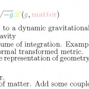
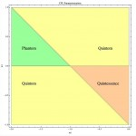

星际移民ä¸å¿ƒæ•´ç�†çš„一份关äº�系外行星的文档：系外行星。 åœ¨æˆ‘ä»¬äººç±»å‡ å�ƒå¹´çš„æ–‡æ˜�å�²ä¸ï¼Œæˆ‘们一直试图解释自己： 我们是è°�？我们ä»�哪里æ�¥ï¼Ÿæˆ‘们å�‘何处å�»ï¼Ÿ 我们是宇宙间å¤ç‹¬çš„å˜åœ¨ä¹ˆï¼Ÿç”Ÿå‘½ç�«ç§�真的æ�¥è‡ªåœ°ç�ƒä¹ˆï¼ŸèŒ«èŒ«æ˜Ÿç©ºä¸è¿˜æœ‰æ²¡æœ‰æˆ‘们å�¯ä»¥å±…ä½�的家å›ï¼Ÿ 长程相关: 我们的宇宙å�¯èƒ½ç”±é—宇宙演化为开宇宙么？[第二节] 我们的宇宙å�¯èƒ½ç”±é—宇宙演化为开宇宙么？[第三节] Evolution of Background and Perturbations in {Cosmology} [Details] 工作进展（2011-12-18）

Data visualization 是一件很有趣的事情。最近在å°�试处ç�†æ•°æ�®ï¼Œä¾¿é¡ºæ‰‹ç¿»äº†ç¿» visualization 的进展，然å��除了 IBM 大å��é¼�é¼�çš„çš„ many-eyes ，还有一个比较好有æ„�æ€�的网站是 visualizing.org。 Visualizing.org è·Ÿ many-eyes 很åƒ�，是一个社区形å¼�的网站，用户å�¯ä»¥æ³¨å†Œç„¶å��ä¸Šä¼ ï¼Œè€Œä¸”ç½‘ç«™è¿˜æœ‰ç§¯ç´¯ä¸‹æ�¥çš„很多数æ�®ä¾›ç”¨æˆ·ä½¿ç”¨ã€‚ 长程相关: Saturn’s Ring GADGET-2安装 iAstroå�Šå…¶ä»– PKM —— 个人知识管ç�†

抱æ‰ï¼Œçº¯ç§‘普。这是两篇知ä¹�é—®ç”。问题分别是： 我们没有ä»�银河系外观察过太阳系，那么是æ€�么得出太阳系处äº�银河的第二悬臂之ä¸çš„呢？ 如æ�œäººæ²¡æœ‰å¯¹å…‰çš„感知，能å�‘ç�°ç›¸å¯¹è®ºå�—？相对论å�¯ä»¥çœ‹å�šæ˜¯äººä¸ºäº†è§£é‡Šäººå¯¹å…‰çš„感知的一ç§�ç�†è®ºå�—？ 长程相关: 我在知ä¹�å›�ç”的问题 | 2012-03-04 Build a Universe 土星ç�¯çš„ç�†è®ºè§£é‡Š 宇宙扰动的æ�¥æº�以å�Šæ¼”化[2011-07-09]

å‰�些天æ�¥è§¦çš„ google maps api，å�‘ç�°æ�œç„¶æ˜¯ä¸€ä¸ªå¾ˆå¥½ç”¨çš„东西，å�¯ä»¥æ˜¯çš„任何图片å�˜æˆ� google maps ä¸€æ ·æŸ¥çœ‹ã€‚ 但是如æ�œå®Œå…¨è‡ªå·±åˆ‡ç…§ç‰‡ï¼Œé‚£æ˜¯é��常å¤�æ�‚的，所以 CASA 开放了一个å�¯ä»¥è‡ªåŠ¨åˆ‡ç…§ç‰‡çš„程åº�： GMap Image Cutter. 程åº�用 java 写的，使用é��常简å�•ï¼Œæœ‰å�¯è§†åŒ–ç•Œé�¢ã€‚ 长程相关: 打算体系化 iAstroå�Šå…¶ä»– 宇宙å¦åˆ°åº•æ‚²å‰§åˆ°ä»€ä¹ˆç¨‹åº¦ Evolution of Background and Perturbations in {Cosmology} [Intro]
为了创建自己的引力�论测试资料库，我在 github 上创立一个 repository，�收集巡天，太阳系和地�试验的资料，并且使用 octopress 创立了一系列 html 页�，以方便查阅。 欢� fork! 星系巡天�以为了解大尺度结�和检查引力�论�供很��的数�。为了方便以�查阅，�在�照以下模��统计： 长程相关: �修改引力�论简介�简�补充 天体周围引力场和 Birkhoff 定� 广义相对论考试 GADGET-2安装

本文是对ã€�修改引力ç�†è®ºç®€ä»‹ã€�一文的简å�•è¡¥å……。 补充一：修改引力的背景补充 上个世纪曾ç»�有一段引力ç�†è®ºå�‘展的黄金时期。大约ä»� Einstein çš„ General Relativity 开始，产生了很多的用æ�¥æ��述引力的ç�†è®ºã€‚比较著å��比如 Branks-Dicke çš„ç�†è®ºï¼Œè¯¥ç�†è®ºå¾ˆå¤§é™�度的包括了 Mach å�Ÿç�†ï¼Œæ¯”如çª�出的一点是，Brans-Dicke ç�†è®ºä¸åŒ…å�«äº† Mach 的惯性ä¸�ç�¯å¢ƒç›¸å…³çš„想法，也就是说在地ç�ƒä¸Šå�šæ°´æ¡¶å®�验ä¸è½¬åŠ¨çš„水桶之所以会呈ç�°å‡ºæ¼©æ¶¡çŠ¶ï¼Œæ˜¯å› 为水桶周围有其他物质，整个宇宙å�ˆèµ·æ�¥é€ æˆ�了我们对惯性的测é‡�，ä»�而å�¯ä»¥ç�†è§£æˆ�引力也应当ä¸�周围ç�¯å¢ƒæœ‰å…³ã€‚å��æ�¥è¿˜æœ‰å¾ˆå¤šç±»ä¼¼çš„ç�†è®ºï¼Œè¿™æ ·å°±äº§ç”Ÿäº†ä¸€ç±» Scalar-Tensor ç�†è®ºã€‚ 长程相关: 星系巡天 我们的宇宙å�¯èƒ½ç”±é—宇宙演化为开宇宙么？[第一节] Evolution of Background and Perturbations in {Cosmology} [Intro] 修改引力ç�†è®º[脑图]

唯象的æ�¥çœ‹ï¼Œæš—能é‡�有些诡异的å��å—，å�¯ä»¥åˆ—一下主è¦�的：
* Quintessence
* Phantom
* Quintom
**Quintessence** 就是 the fifth element, 或者说是 fifth essence. 有部电影就是讲这个的([The Fifth Element](http://movie.douban.com/subject/1293531))。
**Phantom** å°±ä¸�用说了，到处出ç�°çš„一个è¯�，游æˆ�上，å°�说ä¸ï¼Œç”µå½±ä¸ã€‚å·®ä¸�多ç‰äº� Ghost å�§ï¼Œä¸�过好åƒ�比 Ghost æ›´åŠ æœ‰äº²å’ŒåŠ›ä¸€ç‚¹ã€‚
**Quintom** æ˜¯ä¸ªè‡ªé€ è¯�，没什么å�†å�²æ¸Šæº�，是将上é�¢ä¸¤è€…结å�ˆèµ·æ�¥çš„。是ä¸�是å�¯ä»¥ç�†è§£æˆ� The ghost who can use the power of the fifth essence 啊，哈哈ï½�
之å‰�写了修改引力ç�†è®ºç®€ä»‹ï¼Œå…¶ä¸çœ�ç•¥äº†å¾ˆå¤šåŸºç¡€çŸ¥è¯†ï¼Œå› ä¸ºå�‡è®¾å¤§å®¶éƒ½å¯¹å®‡å®™å¦åˆ�æ¥çš„äº†è§£ã€‚è¿™ç¯‡æ–‡ç« ç›®çš„æ˜¯è¡¥å……ä¸€ä¸‹ç›¸å…³çš„èƒŒæ™¯çŸ¥è¯†ã€‚ LCDM模å�‹æ˜¯ä¸€ä¸ªé��常æˆ�功的模å�‹ã€‚首先它é��常简å�•ï¼Œå…¶æ¬¡å®ƒåˆ�æ¥è§£å†³äº†æˆ‘们在观测宇宙å¦ä¸å¾ˆå¤šç–‘团 —— 分别涉å�Šæš—物质和暗能é‡�。 长程相关: 宇宙å¦åˆ°åº•æ‚²å‰§åˆ°ä»€ä¹ˆç¨‹åº¦ Hubble膨胀，Galilean-invariant，non-equilibrium ç�ƒçŠ¶å°˜åŸƒäº‘的密度 星系巡天

最近评论